Everything in Plebbium
A Chromium browser for Windows with Pleb's features built in. Each one is shown the way it looks; open it for how to use it, when it arrived and why it works the way it does.
Stable 156.0.8078.3614Beta 156.0.8078.3615Updated 26 Oct 2026
Shipped
In Stable, the version everyone gets
23 features
-
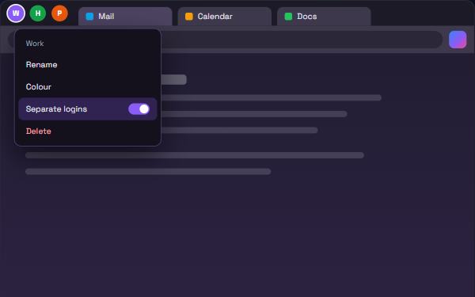
WorkspacesNamed sets of tabs in one window, switched from icons. Nothing reloads; each can have its own logins. -
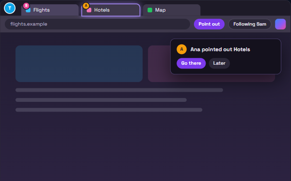
Shared workspacesA workspace that stays the same for everyone in it, live. Encrypted end to end. -
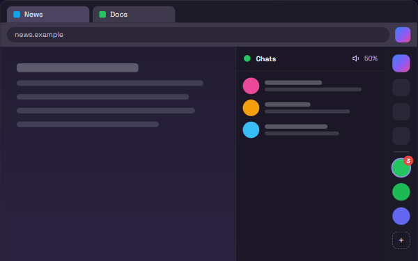
SidebarPleb AI, the Archive and the sites you pin, docked beside the page and signed in. -
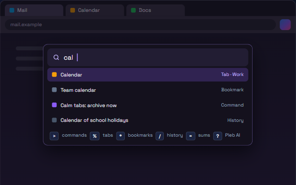
Everything barOne box for commands, tabs, bookmarks, history, sums and questions. -
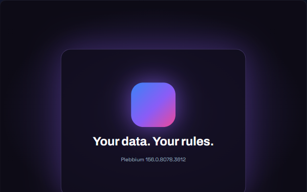
Start windowA short greeting with calm music as Plebbium opens; after an update, what is new. -
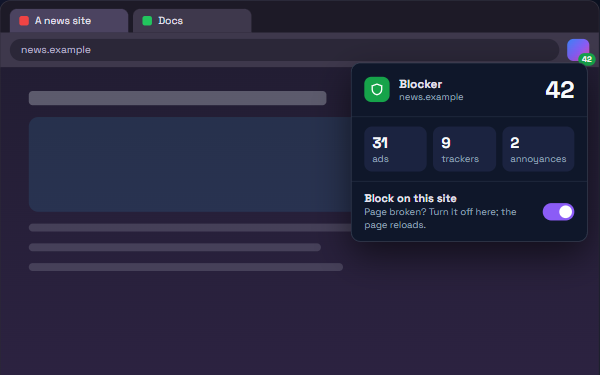
BlockerAds, trackers and annoyances blocked by Chromium itself; off for one site in a click. -
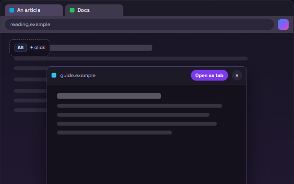
PeekAlt+click a link: it opens in a floating window. Keep it as a tab or click away. -
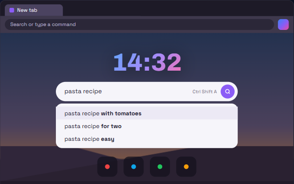
New tabA clock, search with predictions, your top sites and a picture of your own. -
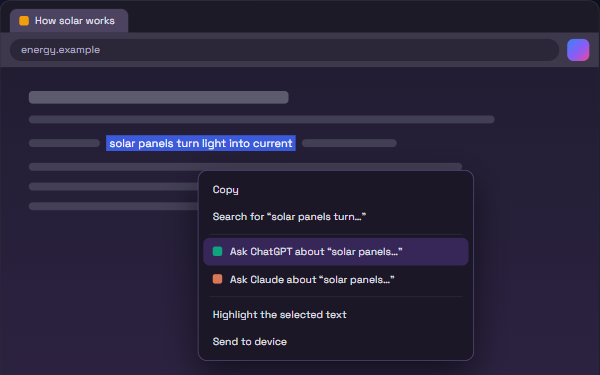
Ask ChatGPT / ClaudeType gpt or clau and a question, or right-click a selection to ask about it. -
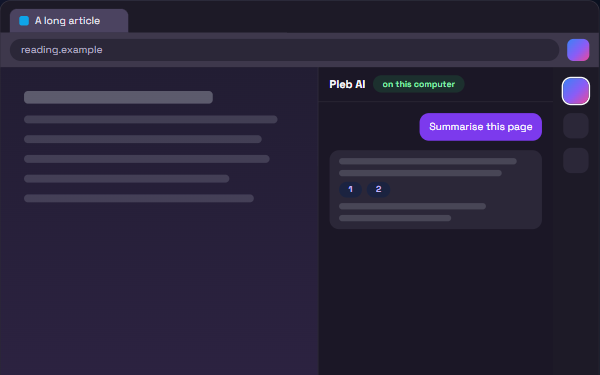
Pleb AIChat with an AI on your own computer, in the sidebar. It never acts on a page by itself. -
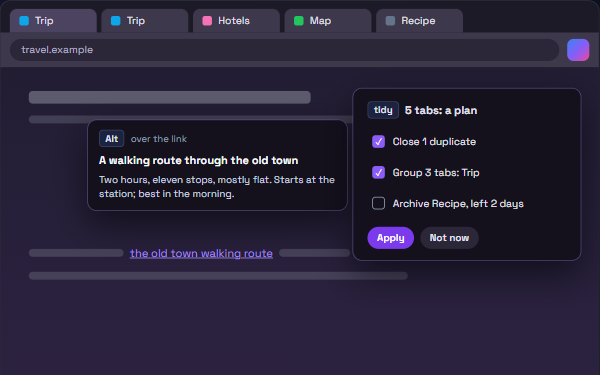
Tab brainPleb AI on your tabs: link previews, tidy proposals and answers from what you have open. -
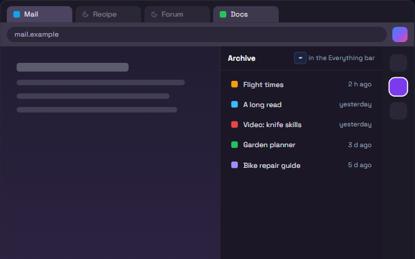
Calm tabsIdle tabs sleep, then close into the Archive after 12 hours. Nothing is lost. -
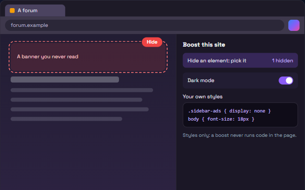
BoostsPer-site styles: hide things, force dark mode, or add your own CSS. Never scripts. -
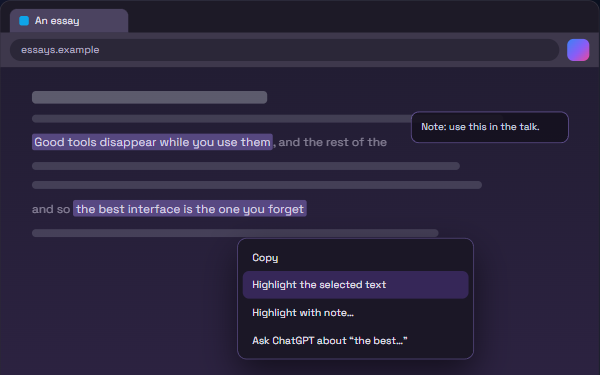
HighlightsMark text on any page; it comes back when you return and is searchable everywhere. -
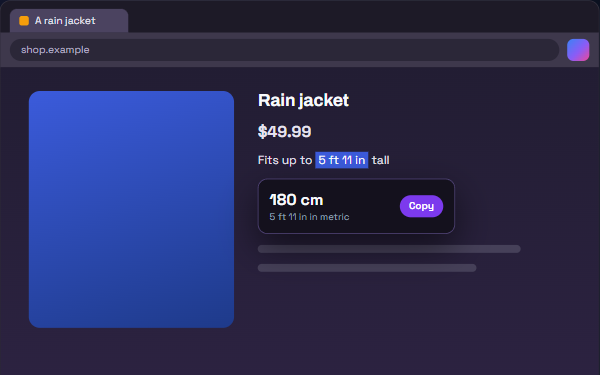
ConvertSelect a price or a size: a bubble shows it in rand or metric, with Copy. -
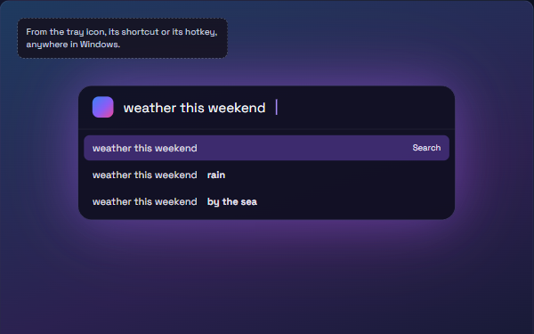
Search with PlebbiumSearch from anywhere in Windows: a search box on the desktop, in Plebbium's look. -
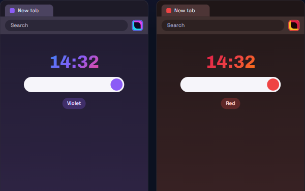
ThemesViolet or red, logo included: Pleb's pages, the browser's colours and its taskbar icon. One button puts it back. -
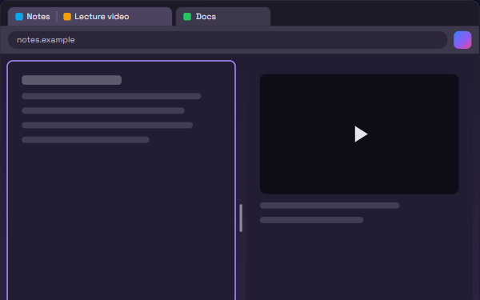
Split viewTwo tabs side by side in one window, from the Everything bar. - UpdatesPlebbium checks briefly as it starts, then asks: Update now installs and restarts.
-
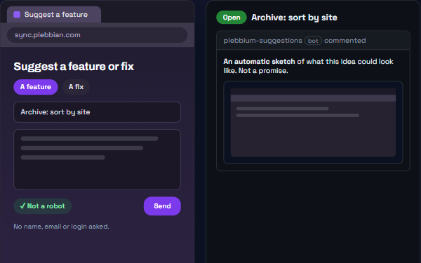
Suggestion boxAsk for a feature or a fix: it becomes a public issue you can follow. -
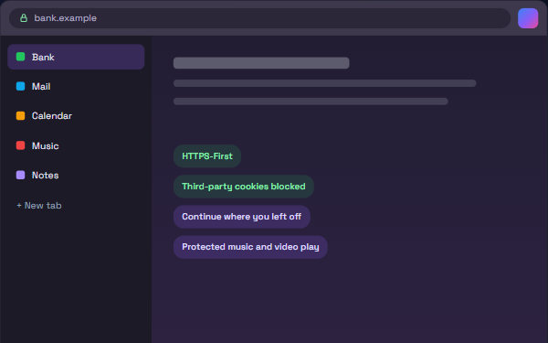
DefaultsVertical tabs, the Pleb look, HTTPS-First and third-party cookies blocked, from the start. -
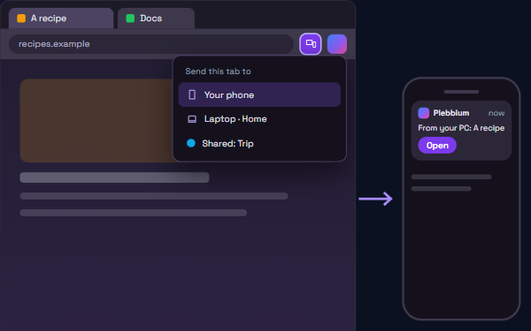
Send to deviceA tab, link or text to your phone or other PCs. Pair a phone with a QR code; no app needed. -
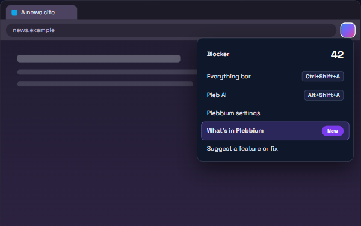
What's in PlebbiumThis page, one click away in the Pleb menu.
In Beta
New features land here first. Plebbium settings › Updates switches to Beta
1 feature
Planned
Not in Plebbium yet. Plans can change
2 features
No feature matches.